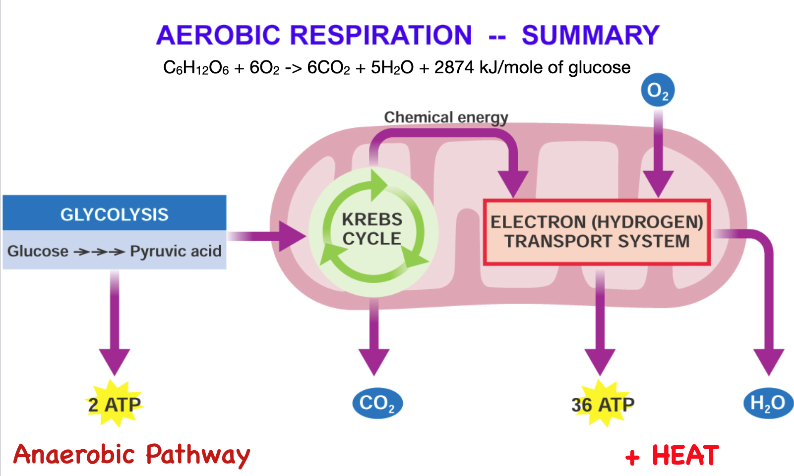
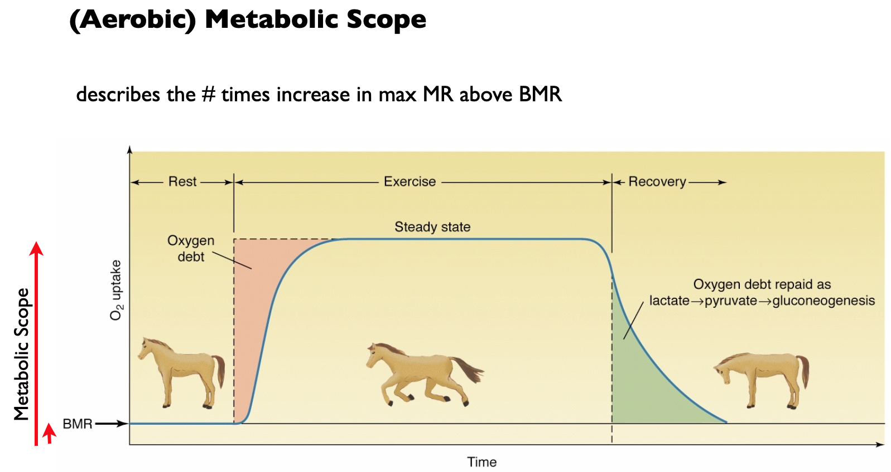
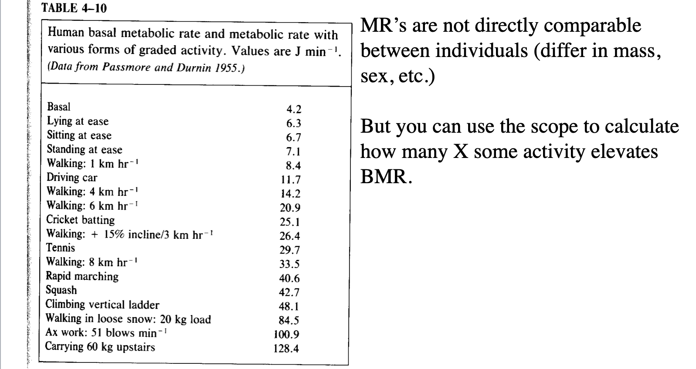
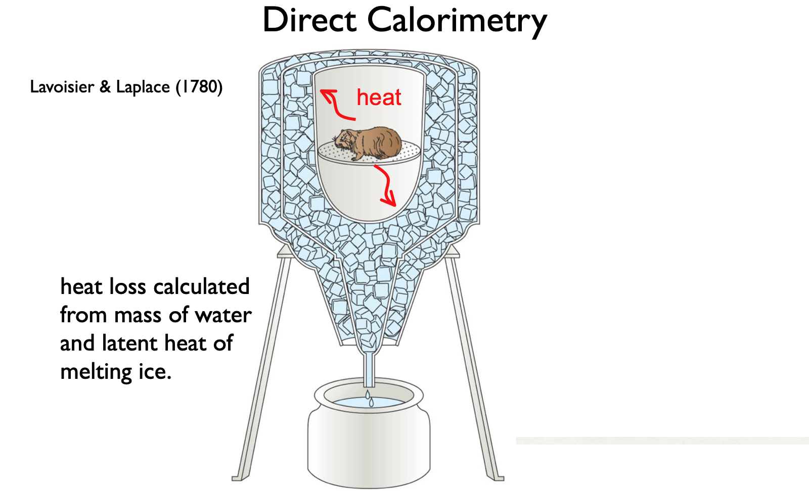
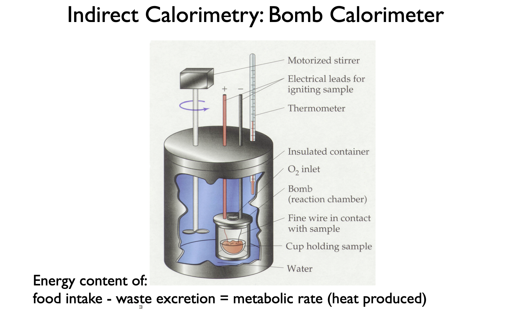
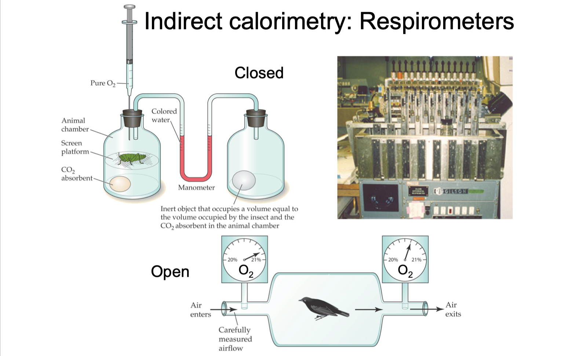

2. Metabolic Rates
module 2
week 2
BMR
SMR
RMR
AMR
DMR
The different types of metabolic rates and what influences them
Pre-class materials
Read ahead
Before class, you can prepare by reading the following materials:
- [Discussion Questions and reading assignment] Note that there are readings from your textbook (Withers, 1992) as well as Hill Wise and Anderson [(HWA)]. (These are on the shared google drive).
Announcements/Reminders
- HW1 is posted
- You should have your book. $20 from SoLS Office St. John 101.
- Turn in your Library Day worksheet in class.
- Please friend me on Discord/ Always tag your partners on anything group-related
- Labs this Week - Meet at Honolulu Zoo at 1:30pm. LMK if you need a ride from campus. Read Lab 2. Bring:
- Your lab notebook
- A timing device (e.g. your phone)
- Sun screen, hat, and sunglasses. It will be hot and sunny!
- Water
- One hardcopy of Lab 1 to turn in
Week 2 Discussion Groups
| Group | Partner 1 | Partner 2 | Partner 3 | |
|---|---|---|---|---|
| 1 | Adry | Kirsten | Maisie | |
| 2 | Justin | Mayuka | Alvin | |
| 3 | Anna | Krystal | Morgan | |
| 4 | Matthew | Christina | Sasha | |
| 5 | Logan M | Richard | Logan B | |
| 6 | Kylie | Garrett | Jessica |
Successful Discussions
- Encourage equal participation
- Take turns going first
- Dig deeper into a subject
- Bring out everyone’s ideas
- Explore and evaluate arguments
- Provide a forum for pitching ideas and practicing vocabulary
- Are interactive, evaluate strengths and soft-spots
2a. Metabolism and how do we measure the cost of being alive?


Discussion Questions
What is BMR and SMR? Why do we need both? What is the difference between BMR/SMR and RMR? What is AMR and MMR?
What is absolute aerobic scope and factorial aerobic scope? Is it specific to an activity? Why? What are the rough rules of thumb for how much higher RMR, AMR, and MMR are above BMR or SMR for active endotherms vs ectotherms? (Look in Withers). If you knew an animal’s RMR and the types of activity it did, what strategy could you use to estimate DMR (Daily Metabolic Rate)?

- We know that MR varies by animal size and taxonomic group. If we knew the cost of running in a 70kg human (letʻs say approximately 10x BMR), how can we use this information to estimate the cost of the same activity in a different animal? What is the justification?

- What is direct and indirect calorimetry? Why can we metabolism by measuring an animal’s heat production (think thermodynamics)? When we try to measure metabolism by measuring heat, or O2, or CO2 – which methods are good for aerobic vs. anaerobic metabolism?



For Next Time
- Meet at the Honolulu Zoo at 1:30pm - in front of main entrance
- Add your fossil here
- Continue the discussion! NOTE: We will discuss Anaerobic metabolism last (Friday)
- HW1 due Friday
2b. Size and Scaling
Reminders and materials
- [Scaling Example]
- [Discussion Questions] Jump to Q6
- [Slide Deck]
- An exciting addition to our teaching team: Allison Fisher
- Friday Class will be held on [Zoom] Please join using your UHID
- [HW1] Due Friday at midnight, written by hand. Submit in person or on Laulima
- After Friday class, please fill out Discussion Evaluations - look for email from TEAMMATES
Scaling Podcast
If you would like some more review (optional)
A walk through of BMR scaling equations
Refresher on log_10, lines, and how much to feed your elephant
For Next Week
- Holiday on Monday
- Labs will be back in EDM101
- Look ahead to the lecture post for 3. Temperature. Watch podcasts, etc.
- Add your fossil here
- HW1 due Friday Sept 1 at midnight
- Due in two weeks [Background Bullet Points]